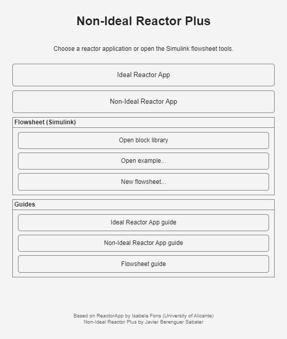

Define a chemical system, a feed, and an ideal reactor
The ideal-reactor application combines guided data-entry windows with a main problem selector. It can simulate one reactor, an association of reactors, or a reactor with recycling. It can also size a reactor by minimizing residence time or cost, and find a minimum-residence-time path for a reversible exothermic reaction.
Recommended order: create the Reactive System, create the Stream, create the Reactor, choose the problem in the list, enter the three saved names in the visible panel, and press Run.

Open this page directly from Ideal Reactor App guide in the new Guides group.
Main window and problem choices
The three buttons under Provide initial data open the data-entry windows. The list below them determines which problem panel appears.
Choice
What the visible panel asks for
Simulate single reactors
One reactive system, feed stream, and reactor.
Simulate an association of reactors
A reactor sequence, series or parallel arrangement, and an optional split.
Simulate a reactor with recycling
A reactor and feed together with the recycle ratio.
Optimize reactor
Feed and target product data, then either minimum residence time or minimum cost.
Minimize residence time for an exothermic reversible reaction
Feed and product data, a key-component index, and the confirmation checks shown in the panel.
The opening view keeps all problem types together in one list.Choosing Simulate single reactors reveals the three name fields and the Run button.
Reactive System window
On General, enter a name, set the number of components and reactions, and fill the stoichiometric matrix. Negative entries are reactants and positive entries are products. Press Create Reactive System after completing the other tabs.
The General tab defines the component count, reaction count, and stoichiometry.
On Kinetics, choose the displayed rate-law option and enter the pre-exponential constant and activation energy for each reaction. The Add button exposes adsorption or inhibition terms when they are needed. The alternative option provides fields for another rate law.
For the worked example, the numerator uses 0.1 and zero activation energy; no denominator term is added.
On Thermodynamics, choose whether properties are imported or entered by the user. User-defined data include heat capacities, molecular weights, the reference temperature, and reaction enthalpies.
The worked example uses equal constant heat capacities, equal molecular weights, and zero reaction enthalpy.
Stream window
Set the component count and fill molar flow or concentration in the table. Then enter the available volumetric flow, pressure, temperature, density, viscosity, and phase. Every column and scalar field has its own unit selector. Leave a field blank when the application should derive it from the other stream data, and press Create Stream.
The example feed contains only Component 1 at 1 gmol/s and 1 kmol/m³, with 3600 L/h at 298.15 K.
Optional stream import
Define stream from Hysys opens a short import window. Supply the file location, file name, and stream name, then press OK. This route is optional; the main Stream window also accepts all data directly.
The import window collects the three references needed to locate a saved external stream.
Reactor window
Choose PFR, CSTR, or Batch. The visible fields adapt to the selected type. Specify its name and size, choose isothermal, adiabatic, or other heat exchange, and select the pressure behavior. Extra fields cover tubes, batch time, heat transfer, catalyst data, and pressure drop when relevant. Press Create Reactor when the definition is complete.
The example is a 0.01 m³ isothermal CSTR at constant pressure.
Utilities and unit conversion
The utilities button in the Reactor window opens hot and cold utility tables. Select the required row and press OK to use its temperatures, heat-transfer coefficient, and cost in a heat-transfer case.
The Utilities window presents the available heating and cooling choices in two tables.
Unit conversion helper is available from the data-entry windows. Select a property, choose the initial and desired units, enter one or more values, and press Convert.
The converter changes displayed engineering units without requiring a separate calculation outside the app.
Worked example: isothermal first-order CSTR
This guide uses a small self-contained teaching case. Liquid A reacts irreversibly to B with first-order rate constant k = 0.1 s-1. The feed contains 1 gmol/s of A at 1 kmol/m³ and 298.15 K. Its volumetric flow is 3600 L/h. The isothermal CSTR volume is 0.01 m³ and pressure remains constant.
Press Reactive System. On General, create two components and one reaction with coefficients -1 and 1. On Kinetics, enter 0.1 for k0 and 0 for Ea. On Thermodynamics, choose User defined and enter the values shown above. Save it as SimpleSystem.
Press Stream. Enter the feed values shown in the Stream image and save it as Feed.
Press Reactor. Choose CSTR, enter 0.01 m³, select Isothermal and Constant, and save it as CSTR01.
Choose Simulate single reactors. Enter the three saved names exactly as shown in the single-reactor panel and press Run.
The Product Stream contains 0.5 gmol/s of A and 0.5 gmol/s of B. Their displayed concentrations are 0.5 kmol/m³ each.
Result check: the residence time is 0.01 m³ divided by 0.001 m³/s, or 10 s. The steady CSTR balance gives an outlet A concentration of 1000 divided by 1 + 0.1 × 10, which is 500 mol/m³. The expected conversion is therefore 50%. The application returned 500 mol/m³ and 50%, so the displayed solution matches the independent balance.
Credits
ReactorApp was developed by Isabela Fons (University of Alicante).